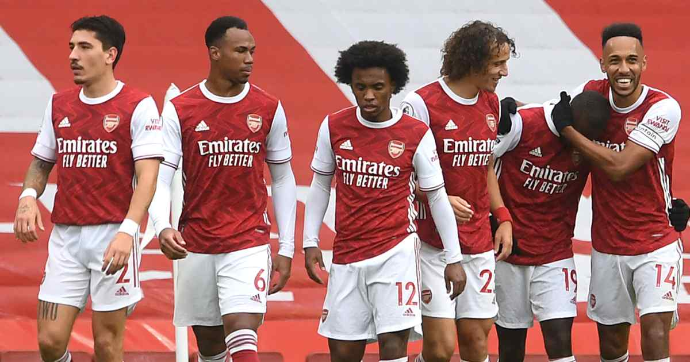

Arsenal Football Club is a professional football club based in Islington, London, England. Arsenal plays in the Premier League, the top flight of English football. The club has won 13 league titles (including one unbeaten title), a record 14 FA Cups, two League Cups, 16 FA Community Shields, the League Centenary Trophy, one European Cup Winners' Cup, and one Inter-Cities Fairs Cup.
History
In October 1886, Scotsman David Danskin and fifteen fellow munitions workers in Woolwich formed Dial Square Football Club, named after a workshop at the heart of the Royal Arsenal complex. Each member contributed sixpence and Danskin also added three shillings to help form the club.Dial Square played their first match on 11 December 1886 against Eastern Wanderers and won 6–0.The club renamed to Royal Arsenal a month later,and its first home was Plumstead Common,though they spent most of their time playing at the Manor Ground. Their first trophies were the Kent Senior Cup and London Charity Cup in 1889–90 and the London Senior Cup in 1890–91; these were the only county association trophies Arsenal won during their time in South East London.In 1891, Royal Arsenal became the first London club to turn professional.

Royal Arsenal renamed for a second time upon becoming a limited liability company in 1893. They registered their new name, Woolwich Arsenal, with The Football League when the club ascended later that year.[23][24] Woolwich Arsenal was the first southern member of The Football League, starting out in the Second Division and reaching the First Division in 1904. Falling attendances, due to financial difficulties among the munitions workers and the arrival of more accessible football clubs elsewhere in the city, led the club close to bankruptcy by 1910.[25][26] Businessmen Henry Norris and William Hall became involved in the club, and sought to move them elsewhere
The last game
It felt particularly apt for Arsenal that the rain hammered down at the Etihad
Stadium on their miserable return to Premier League action.
One hundred long days had passed since the last game in England's top-flight,
but it was like the Gunners had never been away as they capitulated at the home
of the champions.
David Luiz delivered a masterclass of a 25-minute cameo off the bench, making an
individual error leading to a goal, conceding a penalty and getting sent off in the
process.
That accomplishment was in itself a rare feat, Arsenal had been thrashed there
6-3 the previous season. In the same campaign they lost 5-1 at Liverpool.
If that win five years ago hinted at better things to come, they never materialised.
If anything the Gunners have got worse in their rivals' back yard.
They have now failed to win any of their last 25 games at City, Manchester United,
Liverpool, Chelsea and Tottenham.
Return to category page
Return to home page